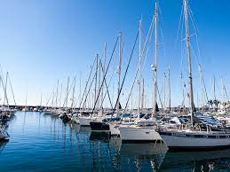

The Seefood
Where the fish tell tales and the shells don't clam up!

Lisää meistä
Tämä on tarinamme
No pitoresco vilarejo costeiro, erguia-se o "The Seefood", um restaurante de frutos do mar conhecido por suas iguarias excepcionais. Entre os pratos deliciosos e a brisa do oceano, floresceu um amor improvável.
Isabela, uma talentosa chef, comandava a cozinha com paixão. Seus olhos encontraram os de Elena, uma cliente regular que sempre buscava inspiração à beira-mar. Trocas de sorrisos evoluíram para conversas e, finalmente, um convite para um jantar especial à luz das velas.
Enquanto as estrelas cintilavam no céu, Isabela preparou um banquete que capturava a essência do oceano. Sob o luar suave, elas compartilharam histórias de suas vidas e sonhos, criando um vínculo profundo. O "The Seefood" tornou-se um local onde não apenas delícias culinárias eram exploradas, mas também onde um amor inesperado encontrou seu lar.